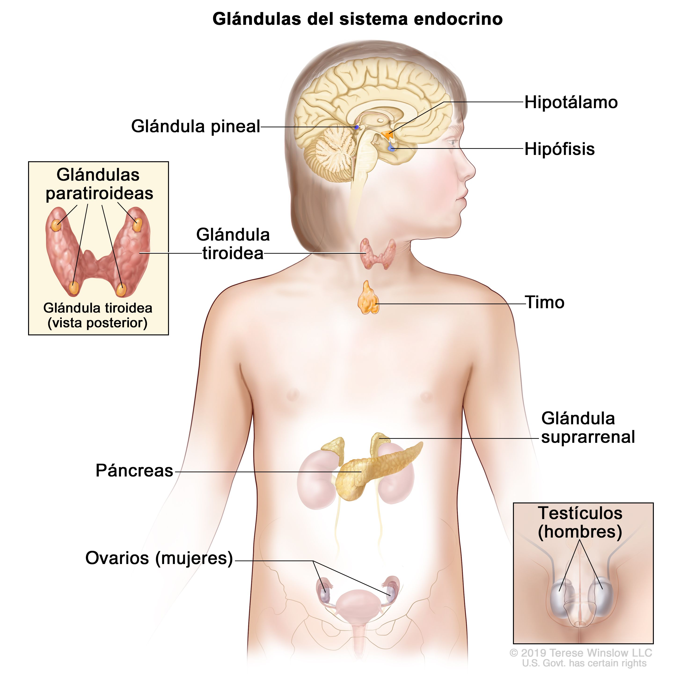

| Conjunto de glándulas y órganos que elaboran hormonas y las liberan directamente en la sangre para que lleguen a los tejidos y órganos de todo el cuerpo. Estas hormonas controlan muchas funciones importantes, como el crecimiento y el desarrollo, el metabolismo y la reproducción. El sistema endocrino incluye el hipotálamo, la glándula pineal, la hipófisis, la glándula tiroidea, las glándulas paratiroideas, el timo, las glándulas suprarrenales y el páncreas. También incluye los testículos en los hombres, así como los ovarios y la placenta (durante el embarazo) en las mujeres. También se llama sistema endocrinológico y sistema hormonal. |
 |